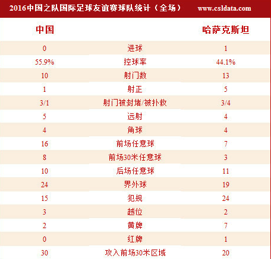

国足0-1哈萨克斯坦止连胜
在大连进行的一场热身赛中，中国队迎战哈萨克斯坦队。开场仅4分钟，吴曦禁区前沿的一脚远射极具威胁，第19分钟，武磊禁区内的射门又被对手后卫用身体封堵出底线，随后王大雷连续献出世界级扑救。第68分钟，阿扎特为哈萨克斯坦打破僵局，第75分钟，黄博文主罚的任意球中柱，虽然此后哈萨克斯坦被罚下一人，但国足未能抓住11打10的机会扳平比分，最终0-1落败，止住了连胜势头。
比赛焦点
国足19年后重回大连：1997年的10强赛，国足将主场设在了大连，此后国足的比赛从未安排在大连进行，这一次与哈萨克斯坦的热身赛，是国足19年后重新回到大连比赛。
5名大连籍国脚首发+大轮换：本期集训名单中，一共有6名大连籍的国脚，与哈萨克斯坦一役，冯潇霆、王大雷、杨旭、李学鹏和赵明剑5名球员全部首发出战，于汉超下半场也是替补出战。而且高洪波本场比赛也是对首发阵容进行了大面积调整，除了张琳芃、赵明剑和冯潇霆连续2场首发外，其余位置与对阵特立尼达和多巴哥的比赛时相比做出了8处调整。
高家军止连胜：高洪波首次执掌国足教鞭时期，最后6场比赛全胜。这一次拾起国足教鞭后，又连胜马尔代夫、卡塔尔和特立尼达和多巴哥，但与哈萨克斯坦的比赛，高家军0-1落败，连胜势头遭止。
国足首负哈萨克斯坦：国足历史上与哈萨克斯坦交手3次，其中2场国际A级赛事中，1997年3-0战胜对手，2007年在苏州的热身赛2-1取胜，此外2007年还与哈萨克斯坦进行了一场60分钟的内部教学赛以1-0的比分小胜。不过，这一次落败后，两队交锋史上国足首次落败。
精彩瞬间
第4分钟，李学鹏左路插上拿球，随后底线附近倒三角传球送到禁区前沿，吴曦插上的一脚远射擦着横梁飞出底线。第14分钟，瑟里克赞的强行射门被任航封堵出底线，随后哈萨克斯坦的角球送到门前造成王大雷摘球脱手，不过王大雷第二反应极快将球拿下。
第19分钟，荣昊将球送入禁区，武磊插上后的转身射门被对手后卫用身体挡出底线。第22分钟，哈萨克斯坦开出球门球直接送到前场，塔纳特头球摆渡，谢尔盖接球后便是一脚射门，好在王大雷注意力集中，伸手将球挡下。第31分钟，乌兰禁区内小角度的爆射被王大雷神勇扑出底线。
上半场补时阶段，任航从身后踢到了飞身抢球的乌兰，乌兰落地时脚踝受力不均导致直接骨折，见到此情此景，哈萨克斯坦球员也是围住任航讨要说法，被当值主裁劝开，任航也是被出示黄牌警告。随后受伤的乌兰被担架直接抬下场，经过简单处理后直接送往医院接受治疗。
随着乌兰的受伤，下半场哈萨克斯坦球员的动作明显加大。第61分钟，尤里禁区前沿凶狠铲倒武磊，蒿俊闵操刀主罚任意球但直接将球射飞。
第68分钟，德米特里掷出界外球，倒脚到中场，随后哈萨克斯坦球员直接将球长传至禁区前沿，尤里头球摆渡蹭向禁区，阿扎特反越位成功摆脱防守，面对王大雷头球攻门得手，国足0-1落后。
第75分钟，黄博文禁区前沿拿球被放倒，随后黄博文操刀主罚任意球，皮球绕过人墙，对手门将飞身扑救未能碰到皮球，但皮球却击中立柱，国足错失扳平比分的机会。第83分钟，叶尔多斯拉倒了禁区前沿突破的于汉超，吃到第2张黄牌被罚下场，剩下的时间哈萨克斯坦只能以10人应战。
数据分析

国足在控球率上占优（55.9%VS44.1%），但射门次数却以10-13比对手少了3次，命中目标的射门，国足仅有1次，而哈萨克斯坦却多达5脚。角球次数双方平分秋色，拿到禁区附近的任意球机会国足多达8次，也制造出一些威胁，可惜立柱婉拒了黄博文的射门。攻入前场30米区域的次数，国足多达30次，对手仅为20次。值得一提的是本场热身赛的红黄牌数量，对手吃到7张黄牌和1张红牌，这与上半场由哈萨克斯坦球员断腿，导致队友情绪失控不无关系。
赛后声音
高洪波：非常沮丧！从战术上教练组也是为了考虑12强赛，做了一种尝试，不过新战术演练从结果来看确实非常令人失望，无论进攻还是防守。尤其进攻层面，比上一场差距更大，这是教练组问题。
任航：我首先要向对方受伤的球员道歉。那个球真的是一次无意拼抢，我也没想到会造成这么大的伤害。真的没想去伤害对方，作为职业球员，我不可能那样去做。
张琳芃：今天比赛一开始踢的是343。这也是高指导上任以来第一次踢三后卫。可能有些队员在俱乐部中也没有踢过三后卫，所以在比赛中出现了一些问题，对于这样的问题我们还需要慢慢磨合。对于这样的新阵型来说，大家进入状态还是比较慢。
塔尔加特：我们受伤的球员伤势比较严重，还要等待医生的进一步确认。我们也会观看回放录像确认伤情。双方都有动作，但中国的防守队员（任航 ）也不是故意的。我们后来队员出现一些吃黄牌的动作，并非故意报复，主要是场上竞争比较激烈，我们也提醒队员注意动作，不要过于激烈。
中国队首发阵容
门将：23-王大雷；
后卫：10-任航（45’黄牌）、25-冯潇霆、3-张琳芃、11-李学鹏（第54分钟 22-于海）；
后腰：13-吴曦（第46分钟 24-黄博文）、26-蒿俊闵；
前卫：16-荣昊（71’黄牌第83分钟 20-姜宁）、7-武磊（第69分钟 19-于汉超）、17-赵明剑；
前锋：18-杨旭（第46分钟 15-张玉宁）
哈萨克斯坦首发阵容
门将：12-戴维；
后卫：2-马利-谢尔盖（73’黄牌）、6-叶尔多斯（74’黄牌 83’黄牌+红牌）、15-马沙特（第67分钟 9-阿尔米）、17-塔纳特（第76分钟 19-罗曼）；
中场：7-乌兰（第46分钟 16-贾福尔52’黄牌）、8-斯马科夫（第88分钟 10-阿斯哈特）、18-德米特里（85’黄牌）、23-尤里（61’黄牌）；
前锋：11-瑟里克赞（第90+分钟 14-帖木）、20-谢尔盖（第60分钟 13-阿扎特）